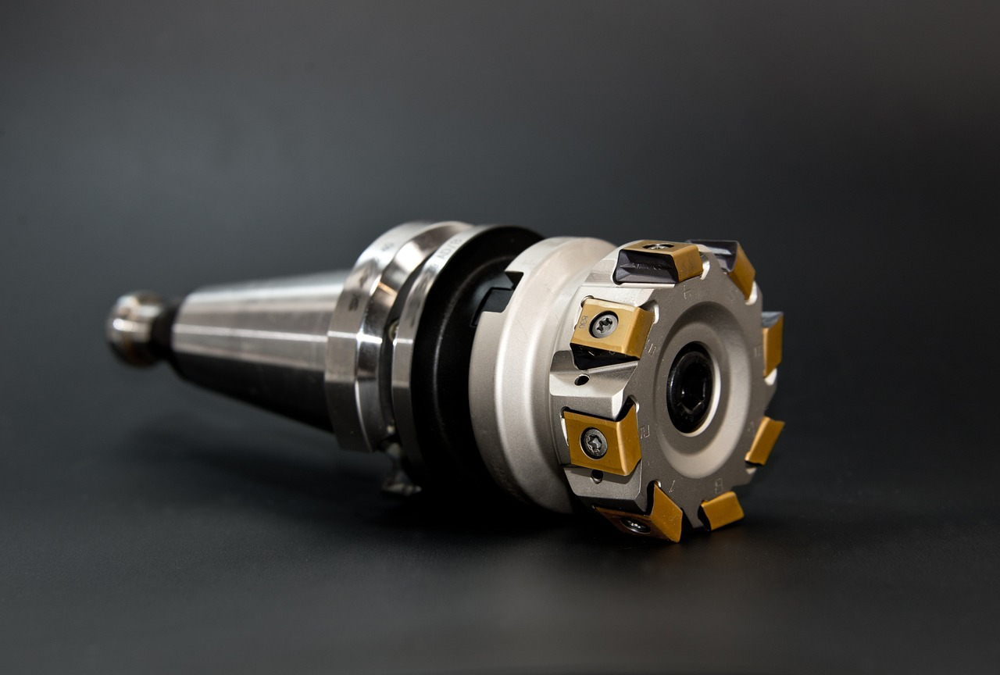

고려아연 갈륨 2028 선언, 공백 3년 누가 채우나

고려아연은 2026년 9월 온산제련소 내 갈륨 전용 공장 신설을 공식 발표하고 2028년부터 연간 15.5t 생산을 목표로 제시했다. 투자 규모는 공개되지 않았으나 기존 아연 정련 부산물 회수 방식으로 채산성을 확보할 계획이다.
중국의 갈륨 수출허가제 시행(2023년 8월) 이후 현재까지 kg당 가격은 220달러에서 약 2,000달러로 9배 폭등했다. 한국 GaN 전력반도체·화합물 반도체 제조사들은 2025년 원재료비 급등으로 영업이익률이 평균 4~7%p 하락한 것으로 파악된다.
한국의 연간 갈륨 소비량은 화합물 반도체·LED·태양전지 합산 추정치 기준 40~50t이다. 고려아연 15.5t은 최대 수요 대비 31%에 불과하며, 나머지 물량은 중국·캐나다·독일 등 대체 루트에서 조달해야 한다. 일본 도와광업(Dowa Mining)이 연 20t 규모 갈륨 정련 능력을 보유 중이나 자국 수요 우선 공급 원칙을 유지하고 있다.
2025~2027년 고려아연 공장 완공 전까지 한국은 갈륨 자급 루트가 사실상 전무하다. 캐나다 넥스트소스(NextSource)·벨기에 우미코어(Umicore) 등이 비중국 공급 확대를 추진하고 있으나 상업 규모 물량 공급 시점은 2027년 이후로 예상된다.
고려아연의 2028 선언은 '한국이 갈륨을 국산화한다'는 메시지로 소비되고 있지만, 공급망 실무 관점에서는 2028년까지 3년간 조달 리스크가 오히려 구조화된다는 신호다. 선언이 나오면 오히려 중국 공급자들은 한국의 탈중국 의도를 확인하고 허가 심사를 더 까다롭게 적용하는 패턴이 반복된다.
수요처인 한국 GaN 파워소자·화합물 반도체 업체들은 이미 재고 확충과 사용량 절감 설계 전환 두 가지 트랙을 동시에 진행 중이다. 파운드리 3곳 이상이 GaN-on-Si 공정 비중을 높여 갈륨 소모량을 기존 GaN-on-SiC 대비 30~40% 낮추는 공정 전환을 검토하고 있다. 이는 단기 원가 절감이지만 장기적으로는 SiC 기반 고출력 소자 시장에서의 경쟁력을 약화시키는 트레이드오프다.
비중국 갈륨 정련 역량을 보유한 벨기에 우미코어와 캐나다 넥스트소스가 가장 직접적인 수혜 후보다. 우미코어는 이미 반도체 등급 갈륨 정제 라인을 가동 중이며, 한국·유럽·일본 수요처와의 장기 공급계약 협상을 가속하고 있는 것으로 파악된다.
국내에서는 고려아연 외에도 영풍그룹의 아연 제련 부산물 활용 가능성이 거론되고 있다. 영풍 석포제련소는 국내 2위 아연 정련 업체로, 갈륨 회수 설비 투자 시 연 5~8t 추가 공급이 기술적으로 가능하다는 분석이 나온다. 소재 전문 투자 관점에서는 고려아연(010130)과 영풍(000670) 두 종목의 갈륨 생산 관련 설비 투자 공시에 주목할 필요가 있다.
한국 GaN 전력반도체 팹 3사(예: 파워마스터반도체·웨이브일렉트로닉스·에피크로스)는 2025~2027년 갈륨 조달 비용 부담을 고스란히 지게 된다. kg당 2,000달러 수준이 유지될 경우 연간 원재료 추가 비용은 업계 전체로 약 500~700억원 수준으로 추정된다.
중국 의존 갈륨 수입 비중이 70% 이상인 한국 LED·태양전지 소재 업체들도 타격권이다. 일부 업체는 이미 갈륨 함유량을 줄인 저순도 대체 소재로 공정을 수정했으나, 고순도(6N 이상) 갈륨이 필수인 화합물 반도체 공정에서는 대체가 불가능하다.
GaN 전력반도체 제조사와 구매담당자는 지금 당장 2025~2027년 갈륨 조달 계획을 재검토해야 한다. 중국 단일 루트 의존 비중을 50% 이하로 낮추는 것이 목표라면, 우미코어·넥스트소스와의 선도계약(forward contract) 협상을 올해 4분기 내에 시작해야 한다. 2026년 이후에는 비중국 물량이 본격 흡수되며 계약 조건이 지금보다 불리해질 가능성이 높다.
투자자 관점에서는 고려아연 2028 생산 선언보다 2026~2027년 설비 투자 공시와 파일럿 생산 수율 데이터가 더 중요한 관찰 포인트다. 선언과 실제 상업 생산 사이의 간극이 클수록 국내 GaN 업체 밸류에이션에는 부정적 요인으로 작용한다.
실제 조달 현장에서는 — 갈륨 수입 오더를 넣으면 중국 측 공급자가 '용도 확인서'와 '최종 수요처 서류'를 요구하는 빈도가 2024년 대비 3배 이상 늘었다. 허가 대기 기간도 평균 8~12주로 늘어났다. 서류 심사 지연을 감안하면 실제 조달 리드타임은 공식 납기보다 4~6주 더 길게 잡아야 하고, 안전 재고는 최소 16주치 이상을 확보해야 공정 차질을 막을 수 있다.
이 포스팅은 쿠팡 파트너스 활동의 일환으로 수수료를 제공받습니다.